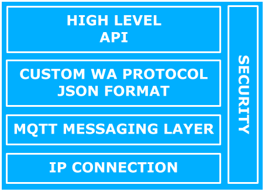

WolkConnect library¶
WolkConnect libraries are used to enable a device’s communication with WolkAbout IoT Platform. Using WolkConnect libraries in the software or firmware of a device will drastically decrease the time to market for developers or anyone wanting to integrate their own product with WolkAbout IoT Platform.
WolkConnect libraries are intended to be used on IP enabled devices. The available WolkConnect libraries (implemented in the following programming languages C, C++, Java, Python) are platform independent for OS based devices, with a special note that the WolkConnect-C library is suitable to be adapted for the use on non-OS devices as WolkConnect libraries have a small memory footprint.
Features of WolkAbout IoT Platform that have been incorporated into WolkConnect libraries will be disambiguated with information on how to perform these features on devices by using WolkConnect’s API.
WolkConnect libraries are open-source and released under the Apache License 2.0.
Architecture¶
WolkConnect library is intended to be used as a dependency in other firmwares or softwares that have their own existing business logic. WolkConnect library is not, by any means, a single service to control the device, it is a library intended to handle all the specific communication with WolkAbout IoT Platform.
Using WolkConnect library requires minimal knowledge of WolkAbout IoT Platform, no knowledge of the internal mechanisms and protocols of WolkAbout IoT Platform is necessary. The user only utilizes APIs provided by WolkConnect library in the User Application Layer, thereby reducing time-to-market required.
The architecture of software/firmware where WolkConnect library is meant to be used is presented in Fig.1.1. The gray section in Fig.1.1 represents the developer’s software/firmware.

Fig.1.1 WolkConnect library represented in general software/firmware architecture.
The gray section between the User Application Layer and the Hardware Abstraction Layer represents the user’s libraries and drivers that are required for his project. Providing WolkConnect library with IP connectivity from the Hardware Abstraction Layer is expected from the user.
WolkConnect library is separated into layers as shown in Fig.1.2
{kind=link}
Fig.1.2 WolkConnect library layers
WolkConnect libraries use IP connectivity provided by the OS, but on devices, where this not available, it is user’s responsibility to provide implementations for opening a socket and send/receive methods to the socket.
Communication between WolkConnect library and WolkAbout IoT Platform is achieved through the use of the MQTT messaging protocol. WolkConnect libraries have a common dependency, an implementation of an MQTT client that will exchange data with an MQTT server that is part of WolkAbout IoT Platform. The communication between WolkConnect library and WolkAbout IoT Platform is made secure with the use of Secure Sockets Layer (SSL).
Another common dependency for WolkConnect libraries is JSON library that is used for parsing data that is exchanged with WolkAbout IoT Platform. This data is formatted using a custom JSON based protocol defined by WolkAbout IoT Platform.
The high-level API represents what is available to the developer that is using WolkConnect library. APIs follow the naming convention of the programming language they were written in. Consult a specific WolkConnect library’s documentation for more information. The API is divided into three parts: connection management, data handling and device management. Data handling is independent of device management on WolkAbout IoT Platform and therefore has a separate API. Device management is responsible for device health and this, in turn, increases the device’s lifespan.
API’s functional description¶
WolkConnect libraries separate device’s functionality through the API into three distinct parts:
- Connection Management - allows controlling the connected device in order to maintain data delivery integrity:
- Connect
- Disconnect
- Keep-Alive Mechanism
- Data Handling - valuable data to be exchanged with WolkAbout IoT Platform:
- Sensors
- Alarms
- Actuators
- Device management - dynamical modification of the device properties with the goal to change device behavior:
- Configuration Options
- Device Software/Firmware Update
Connection Management¶
Every connection from WolkConnect library to WolkAbout IoT Platform is authenticated with a device key and a device password. These credentials are created on WolkAbout IoT Platform when a device is created and are unique to that device. Only one active connection is allowed per device.
Attempting to create an additional connection with the same device credentials will terminate the previous connection. The connection is made secure, by default, in all WolkConnect libraries through the use of Secure Sockets Layer (SSL). Connecting without SSL is possible. For more information, refer to specific WolkConnect library documentation.
Connect¶
A device can be connected to WolkAbout IoT Platform in two ways:
- Always connected devices - connect once and publish data when necessary. Actuations can only be used in this case, as sending actuations from WolkAbout IoT Platform are disabled when the device is offline.
- Periodically connected devices - connect and publish data when needed. It is important to use disconnect here, as this is a valid device state on WolkAbout IoT Platform - controlled offline.
Disconnect¶
Disconnecting will gracefully terminate the connection and the device will momentarily appear offline on WolkAbout IoT Platform. In cases of ungraceful disconnections, eg. due to a networking error, WolkAbout IoT Platform will be able to determine if the device is offline based on whether the device has send a message from its keep-alive mechanism. After waiting for the keep-alive mechanism timeout with no message, WolkAbout IoT Platform will declare the device offline.
Keep Alive Mechanism¶
In cases where the device is connected to the Platform but is not publishing any data for the period of 30 minutes, the device may be declared offline. This is especially true for devices that only have actuators, for example. To prevent this issue, a keep-alive mechanism will periodically send a message to WolkAbout IoT Platform. This mechanism can also be disabled to reduce bandwidth usage.
Data Handling¶
Real world devices can perform a wide variety of operations that result in meaningful data. These operations could be to conduct a measurement, monitor certain condition or execute some form of command. The data resulting from these operations have been modeled into three distinct types of data on WolkAbout IoT Platform: sensors, alarms, and actuators.
Information needs to be distinguishable, so every piece of data sent from the device needs to have an identifier. This identifier is called a reference, and all the references of a device on WolkAbout IoT Platform must be unique.
Sensor readings¶
Sensor readings are stored on the device before explicitly being published to WolkAbout IoT Platform. If the exact time when the reading occurred is meaningful information, it can be assigned to the reading as a UTC timestamp. If this timestamp is not provided, WolkAbout IoT Platform will assign the reading a timestamp when it has been received, treating the reading like it occurred the moment it arrived.
Readings could be of a very high precision, and although this might not be fully displayed on the dashboard, the information is not lost and can be viewed on different parts of WolkAbout IoT Platform.
Sensors readings like GPS and accelerometers hold more than one single information and these types of readings are supported in WolkConnect libraries and on WolkAbout IoT Platform. This concept is called a multi-value reading.
Alarms¶
Alarms are derived from some data on the device and are used to indicate the state of a condition, eg. high-temperature alarm which emerged as a result of exceeding a threshold value on the device. Alarm value can either be on or off.
Like sensor readings, alarm messages are stored on the device before being published to WolkAbout IoT Platform. Alarms can also have a UTC timestamp to denote when the alarm occurred, but if the timestamp is omitted then WolkAbout IoT Platform will assign a timestamp when it receives the alarm message.
Actuators¶
Actuators are used to enable WolkAbout IoT Platform to set the state of some part of the device, eg. flip a switch or change the gear of a motor.
Single actuation consists of the command to a device and feedback from the device. A command is a message that arrived at the device. Feedback is the current status of the actuator on the device which needs to be sent to WolkAbout IoT Platform in order to complete a single actuation process. Current status has two parameters: actuator value and actuator state. Value is current value of the actuator, eg. for a switch, it can be true or false. Possible actuator states are:
- READY - waiting to receive a command to change its value
- BUSY - in the process of changing its value
- ERROR - unable to comply
To perform a successful actuation, user needs to know the actuator references he was required to enter in the manifest, on the Platform, to forward them during the actuation initialization period. The user has to implement an actuation handler that will execute the commands that have been issued from WolkAbout IoT Platform. Then the user has to implement an actuation provider that will update WolkAbout IoT Platform with the current status of the actuator. Publishing actuator statuses is performed immediately, but if the actuator takes time to be executed, eg. closing the gate, then the actuator status will update WolkAbout IoT Platform with the current values until it reaches the commanded value. If the device is unable to publish the actuator status, then the information will be stored on the device until the next successful publish attempt.
To summarize, when the actuation command is issued from WolkAbout IoT Platform, it will be passed on to the actuation handler that will attempt to execute the command, and then the actuator status provider will report back to WolkAbout IoT Platform with the current value and the state of the actuator.
Device Management¶
Configuration¶
Configuration is the dynamical modification of the device properties from WolkAbout IoT Platform with the goal to change device behavior, eg. measurement heartbeat, sensors delivery reduction, enabling/disabling device interfaces, increase/decrease device logging level.
Configuration requires the same way of handling messages as actuation. When a configuration command is issued from WolkAbout IoT Platform, it will be passed to the configuration handler that will attempt to execute the command. Then the configuration status provider will report back to WolkAbout IoT Platform with the current values of the configuration parameters, with the addition that configuration parameters are always sent as a whole, even when only one value changes.
Device Software/Firmware Update¶
WolkAbout IoT Platform gives the possibility of updating the device software/firmware. The process is separated into three autonomous stages:
- Delivering software/firmware file from WolkAbout IoT Platform to a device
- Start the process of installing a file on the device
- Verify installed software/firmware
The device needs to be connected to and deliver current software/firmware version to WolkAbout IoT Platform before starting to exploit software/firmware update.
WolkAbout IoT Platform actuates the device to start the process of installing. The responsibility to successfully install the file is on a device, not on WolkConnect library. In order to update the firmware, the user must create a firmware handler.
This firmware handler will specify the following parameters:
- Current firmware version,
- Desired size of firmware chunk to be received from WolkAbout IoT Platform,
- Maximum supported firmware file size,
- Download location,
- Implementation of a firmware installer that will be responsible for the installation process.
- Optionally, an implementation of firmware download handler that will download a file from an URL issued from WolkAbout IoT Platform.